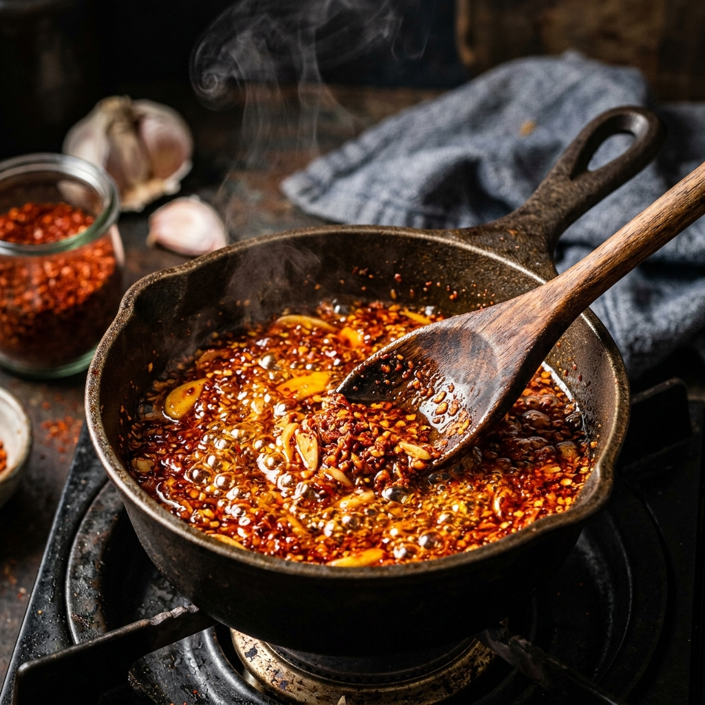
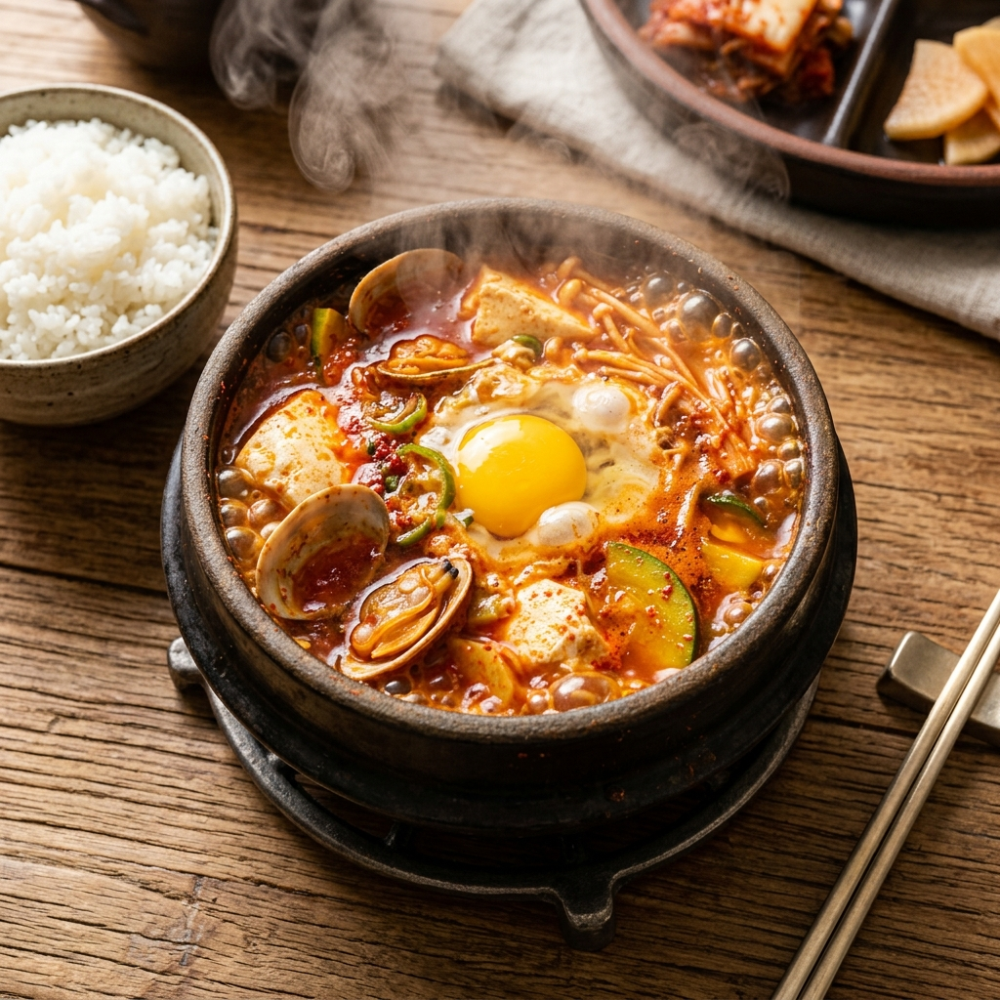
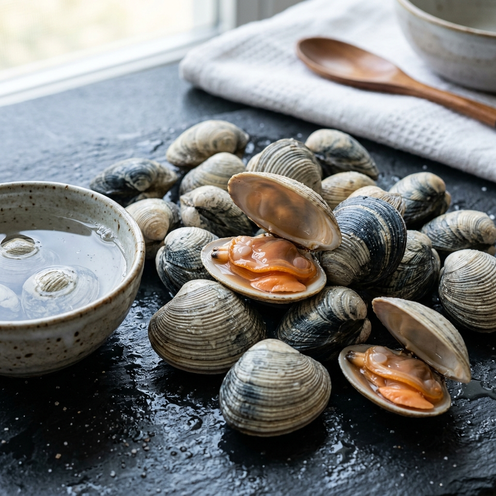

본격 레시피로 들어가기 전에, 바지락 순두부찌개를 망치는 흔한 패턴부터 짚고 가겠습니다. 자기 요리가 이 중 어디에 해당하는지 짚어보면 개선 포인트가 분명해집니다.
실패 패턴 ① — 고춧가루를 끓는 국물에 그대로 넣는다: 색도 향도 제대로 나지 않습니다. 고춧가루의 색소와 향은 기름에 녹을 때만 풀려나오기 때문입니다. 국물에 직접 넣으면 '붉은 가루가 떠 있는 멀건 국물'이 되기 십상입니다.
실패 패턴 ② — 바지락 해감을 짧게 하거나 생략한다: 한 입 먹다가 모래가 씹히는 순간, 그 찌개는 끝납니다. 바지락은 최소 2시간의 해감이 필수입니다.
실패 패턴 ③ — 바지락을 오래 끓인다: 입을 벌린 후에도 계속 끓이면 살이 쪼그라들고 국물에서 비린 맛이 올라옵니다. 바지락은 입을 벌리는 순간이 베스트 컷이고, 그 이상은 손해입니다.
세 가지 모두 한 가지 공통점이 있습니다. 온도와 시간의 디테일입니다. 본 가이드는 정확히 이 디테일을 잡는 데 초점을 둡니다.
순두부찌개의 단백질 재료로 선택할 수 있는 것은 여러 가지입니다. 새우, 굴, 돼지고기, 소고기. 그런데 굳이 바지락을 추천하는 이유는 분명합니다.
영양 측면: 바지락은 100g당 약 51kcal에 불과한 저칼로리 식재료입니다. 타우린·철분·비타민 B12가 풍부해 피로 회복과 빈혈 예방에 도움이 됩니다. 다이어트 식단에서도 부담 없이 활용할 수 있는 단백질원입니다.
감칠맛 측면: 바지락이 익을 때 살에서 나오는 글루탐산(glutamic acid)이 국물에 자연스럽게 녹아들어 강력한 천연 우마미를 만들어냅니다. 다시다나 조미료 없이도 깊은 국물 맛을 얻을 수 있는 비결이 여기에 있습니다.
제철 측면: 일반적으로 바지락 제철은 3~5월과 10~11월이라고 알려져 있지만, 6월 초까지도 살이 통통합니다. 특히 5~6월의 바지락은 산란 직전이라 영양분을 가득 저장한 상태입니다. 이 시기 국물 맛이 특히 진하고 달큰합니다.
| 구분 | 재료 | 분량 |
|---|---|---|
| 해물 | 바지락 (껍데기째) | 약 250~300g (종이컵 약 1.5컵) |
| 두부 | 순두부 (연두부 타입) | 1팩 (약 300g) |
| 야채 | 애호박 | 1/4개, 얇은 반달 모양 |
| 야채 | 대파 | 10cm 정도, 어슷썰기 |
| 옵션 | 단단한 두부 | 1/4모, 사방 1cm 깍둑썰기 (기호) |
| 옵션 | 달걀 | 1개, 마무리에 올림 |
| 기름·양념 | 식용유 | 2큰술 (고추기름용) |
| 기름·양념 | 고운 고춧가루 | 1.5큰술 |
| 기름·양념 | 다진 마늘 | 1큰술 |
| 간 | 새우젓 | 0.5작은술 |
| 간 | 국간장 | 0.5작은술 (기호) |
| 국물 | 물 또는 멸치·다시마 육수 | 300ml (종이컵 약 1.5컵) |
| 마무리 | 참기름 | 0.5작은술 (불 끄기 직전) |
해감은 바지락 요리의 첫 번째 관문입니다. 여기서 대충하면 뒤에 무엇을 해도 만회가 안 됩니다.
해감용 소금물 비율은 3% 농도입니다. 물 1L당 소금 30g 정도면 바닷물과 비슷한 농도가 됩니다. 가정용 종이컵 기준으로는 작은 한 줌(약 30g)이 한 큰술 정도이니, 그 정도면 충분합니다.
해감 순서:
① 바지락을 흐르는 물에 한 번 씻어 껍데기 표면 이물질을 제거합니다.
② 큰 볼이나 냄비에 바지락을 깔고, 바지락이 완전히 잠길 만큼 소금물을 붓습니다.
③ 위에 신문지 또는 뚜껑을 덮어 빛을 차단합니다(어두워야 바지락이 입을 잘 벌립니다).
④ 실온에서 2~3시간 방치합니다. 냉장고에 넣으면 바지락이 활동을 멈춰 해감이 잘 안 됩니다.
⑤ 끝나면 흐르는 물에 여러 번 헹궈 표면 점액과 이물을 다시 한 번 제거합니다.
이제 본격적인 베이스 작업입니다. 고추기름은 따로 만들어 두지 않고, 찌개 끓일 냄비에서 바로 추출합니다. 이게 식당식 비법입니다.
1단계: 뚝배기나 작은 냄비에 식용유 2큰술을 두르고 중약불(가스레인지 3~4단계)로 가열합니다. 강불은 절대 금지입니다.
2단계: 기름 위 5cm 높이에 손바닥을 댔을 때 가벼운 온기가 올라오는 시점이면 약 100~120°C입니다. 이때 고운 고춧가루 1.5큰술을 한 번에 투입합니다. 굵은 고춧가루보다 고운 고춧가루가 색·향 추출이 훨씬 좋습니다.
3단계: 주걱이나 나무 스푼으로 빠르게 저어주면서 30~40초간만 볶습니다. 작은 거품이 보글보글 올라오고 진한 붉은 향이 코를 자극하면 정상 진행입니다.
4단계: 고추기름이 진한 주홍빛으로 자리 잡으면 다진 마늘 1큰술을 넣고 추가로 30초간 함께 볶습니다. 마늘의 알리신이 기름에 녹아들면서 향이 입체적으로 변합니다. 이 시점의 기름이 바로 식당식 베이스입니다.

바지락은 찌개가 거의 완성된 시점에 들어갑니다. 절대로 처음부터 넣고 끓이지 마세요. 그러면 살이 쪼그라들고 국물도 비려집니다.
이상적인 투입 타이밍은 국물이 한 번 끓어오른 후, 야채와 순두부가 다 들어간 다음입니다. 이 시점에 해감해 둔 바지락을 한꺼번에 투입합니다.
1~2분 안에 바지락들이 일제히 입을 벌리기 시작합니다. 이때가 베스트 컷입니다. 바지락이 머금고 있던 해수가 국물에 녹아들면서 자연스럽게 짠맛과 감칠맛이 동시에 올라옵니다. 모든 바지락이 입을 벌리는 순간, 즉시 다음 단계로 넘어가야 합니다.
그 이후로 계속 끓이면 안 됩니다. 바지락 살은 단백질 변성이 빨라, 2분 이상 가열하면 고무처럼 질겨지고 국물의 단맛이 사라집니다.
위에서 설명한 두 가지 핵심 기술을 실제 조리 순서에 끼워 맞추면 다음과 같습니다.

이 찌개의 간은 3중 구조로 짜야 실패가 없습니다. 한 번에 짜게 맞춰버리면 바지락이 입을 벌리면서 해수가 추가될 때 너무 짠 국물이 됩니다.
1차 — 새우젓 0.5작은술: 기본 베이스 간. 짭짤한 것보다는 살짝 싱겁다 싶을 정도로만 잡습니다. 새우젓의 아미노산이 바지락 글루탐산과 시너지를 일으켜 국물 깊이를 한 단계 올려줍니다.
2차 — 바지락 해수: 바지락이 입을 벌리면서 자연스럽게 추가되는 짠맛. 양은 바지락 양에 비례합니다. 250~300g 기준 약 0.3작은술 분량의 소금에 해당하는 짠맛이 보충됩니다.
3차 — 국간장 (옵션): 바지락이 모두 입을 벌린 후 최종 간을 보고, 부족하면 국간장 0.5작은술 이내로 보정합니다. 국간장은 색을 짙게 만들 수 있으니 최소량만 사용합니다.
원칙 1 — 순두부는 절대 젓지 말 것: 순두부를 숟가락으로 휘저으면 국물에 풀어져 식감이 다 사라집니다. 투입 후에는 그저 자연스럽게 데워지도록 두세요. 그릇에 담을 때도 큰 숟갈로 떠서 옮기는 정도가 적당합니다.
원칙 2 — 바지락은 입 벌린 그 순간: 다시 한 번 강조합니다. 바지락은 입을 모두 벌리는 순간이 최고의 타이밍입니다. "조금만 더…"라는 생각은 금물입니다. 그 시점 이후의 열은 달걀을 익히는 데만 사용하세요.
원칙 3 — 뚝배기째 곧장 식탁으로: 순두부찌개는 뚝배기의 잔열이 살아 있는 처음 5분이 가장 맛있습니다. 다른 그릇에 옮기지 말고 뚝배기 그대로 식탁에 올려 보글거리는 상태에서 바로 드시는 것이 정답입니다. 반숙 달걀 노른자를 국물에 풀어 비비면 그 부드러움이 화룡점정입니다.
| 영양소 | 1인분 (뚝배기 1개) 기준 |
|---|---|
| 열량 | 약 180~220kcal |
| 단백질 | 약 18~22g |
| 지방 | 약 8~10g |
| 탄수화물 | 약 6~8g |
| 나트륨 | 약 600~750mg |
밥상 구성으로는 갓 지은 흰밥 + 김치 한 가지 + 나물무침 1종이 가장 균형 잡힌 조합입니다. 해장용으로 즐긴다면 콩나물 무침을 추가해 아삭한 식감을 보태면 한층 시원해집니다.

상황에 따른 응용 옵션을 정리합니다.
① 냉동 모시조개로 대체: 해동 없이 바로 투입 가능합니다. 시원함은 생바지락에 비해 약간 떨어지지만, 평일 저녁 빠른 식사용으로는 충분히 좋은 결과가 나옵니다.
② 새우 추가 버전: 중하(中蝦) 3~4마리를 함께 넣으면 더 풍성한 해물 순두부가 됩니다. 새우는 바지락보다 1분 정도 먼저 투입해 익힘 시간을 맞춰주세요.
③ 4인분 확장: 모든 재료를 단순히 두 배로 늘리면 됩니다. 단, 냄비 크기를 키우고, 고추기름 추출 시간은 30~40초 그대로 유지합니다(시간을 늘리면 탑니다).
④ 두부 추가 버전: 순두부에 단단한 두부를 1cm 깍둑썰기로 추가하면 식감 대비가 살아납니다. 단백질 양도 늘어나 한 끼 식사로 더 든든해집니다.